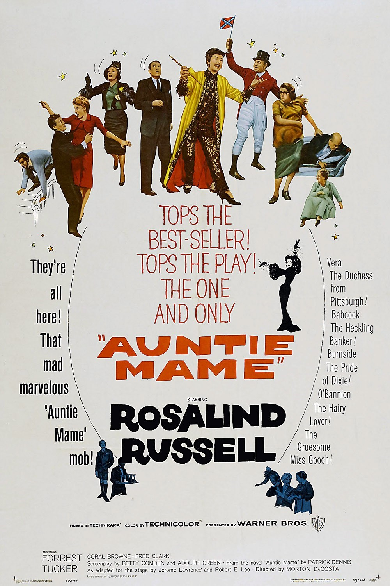

Auntie Mame
31st Academy Awards
(Oscars 1959)
6 Nominations, 0 Awards
| Nominations | ||
|---|---|---|
| Category | Nominees | Result |
| Best Motion Picture | Warner Bros. | Nominated |
| Actress | Rosalind Russell | Nominated |
| Actress in a Supporting Role | Peggy Cass | Nominated |
| Cinematography (Color) | Harry Stradling, Sr. | Nominated |
| Film Editing | William Ziegler | Nominated |
| Art Direction | George James Hopkins and Malcolm Bert | Nominated |